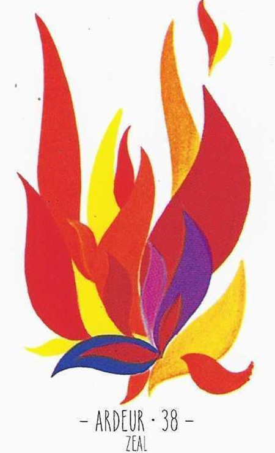

38
정열
Zeal중립

그림 읽기
활활 타오르는 불꽃, 붉은색과 주황색 불길이 격렬하게 펼쳐집니다. 강렬한 색조가 열정적인 상황과 감정을 강조합니다.
정열즉흥적불역동적 에너지창조속전속결
핵심 내용
- 정열·즉흥적·충동적·창조·열정·라이벌, 지속성 없음, 역동적 에너지
- 욱하는 성격, 속전속결, 갱년기(일시적)
- 안정되지 않고 불안정함(어린아이처럼)
- 주변 카드에 따라 좋고 나쁨이 극단적
- 냄비 같은 사람
- 사랑이 불타오름과 동시에 쉽게 꺼질 수 있음, 혼신을 다함
주요 메시지
충동과 불안정 — 열정·적극성·즉흥적 행동
양면성 — 긍정적으로는 활력과 동기부여, 부정적으로는 불안정과 급변
실생활 적용
업무와 목표 — 과도한 열정이 부주의한 결정으로 이어질 수 있음
대인관계·건강 — 충동적 반응이 불화를 만들 수 있고, 스트레스 관리가 필요
학습 노트
긍정 카드와 함께면 열정이 성공적 결과로, 부정 카드와 함께면 불필요한 충동·갈등의 원인이 됩니다.
조합 메모


14번+31번+32번처럼 열정 계열 카드가 겹치면 과열을 먼저 의심합니다.